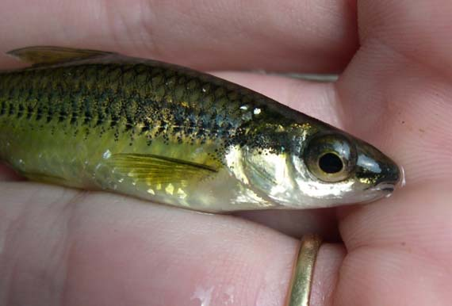
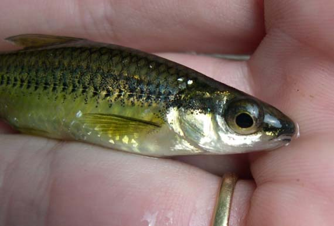

Cape Fear Shiner
 
 (Photo on left from NatureServe, the middle is from North Carolina Wildlife Resources Commission, and the right from Conservation Fisheries)
(Photo on left from NatureServe, the middle is from North Carolina Wildlife Resources Commission, and the right from Conservation Fisheries)Description
The Cape Fear Shiner is a minnow with lengths ranging from 45 to 65mm. They have gold scales outlined in black with a black strip in the middle of the side and a white under belly. During mating season the males become even more golden in color while the females take on a silvery color. During this time the males will grow small round bumps called tubercles on the upper portion of their body (NC Wildlife Resources, 2016).Habitat and Location
The Cape Fear Shiner is located only in North Carolina in Chatham, Harnett, Lee, Moore, and Randolph counties (U.S. Fish and Wildlife Service, 2016).
Since its original discovery the Cape Fear Shiner has lost much of its historical range. Today there are only five known populations located in the Cape Fear River basin. The fish is often found in riffles, shallow runs, and slow pools with gravel, cobble, and boulder substrates. Vegetation such as the American water willow makes great habitat for the Cape Fear Shiner (Hewitt, 2009).
Reasons For Endangerment
The main reason for the population decline of the Cape Fear Shiner is habitat loss, insularization, and creating islands. Due to their now limited range they are extremely vulnerable to different dangers such as chemical spills, droughts, floods, and reduced water quality (Hewitt, 2009).References
Hewitt, A. H., et al. "Population Density and Instream Habitat Suitability of the Endangered Cape Fear Shiner." Transactions of the American Fisheries Society 138.6 (2009): 1439-57. Print.
"Learning." Cape Fear Shiner. NC Wildlife Resources Commision, n.d. Web. 26 Oct. 2016.
Service, U.S. Fish and Wildlife. "Species Profile for Cape Fear Shiner (Notropis Mekistocholas)." Species Profile for Cape Fear Shiner (Notropis Mekistocholas). U.S. Fish & Wildlife Service, n.d. Web. 26 Oct. 2016.